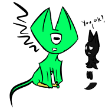
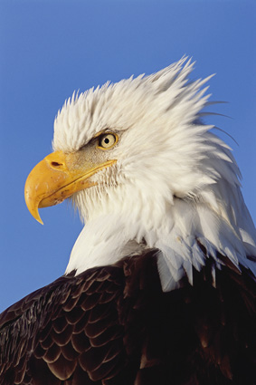

Quotes I Like or Find Interesting
"If you know yourself and the enemy, you need not fear the result of a hundred battles.
If you know yourself and not the enemy, for every victory gained you shall also suffer a defeat.
If you know neither yourself nor the enemy, you shall succumb in every battle.
If you know the enemy and not yourself, you're an American."
"You either die a noob or live long enough to see yourself become a hacker."

"Computers are harder to hack than people... People are dumb."
"Oh, who needs the devil when you can kick him in the face. Take religion!"
"If you were happy every single day of your life, you wouldn't be human.
You'd be a game show host."
"What? You didn't what? You didn't think I'd come up here? Well, guess what, here I am. And, oh, what? There I go. How tragic."
"Because God forbid two teenagers of the opposite sex have a platonic relationship, their classmates assumed they had to be dating."
"Hey, you're doing that thing where you convince yourself that humanity is awful again."
"Humanity is awful. I don't need to convince myself of that, it's just a well known fact."
"'I don't control the shadows, the shadows control me.' What a wonderful metaphor for life."
"How do you expect to get better if you set boundaries for yourself?"
"How do you expect me to live if you ignore my boundaries?!"

"We could start a queer gang. We'll be known as 'those gay emo kids.' We'll be a holy trinity."
"You? In the gym?"
"I exercise ten times more than you do."
"So you don't exercise. Ten times zero is zero, idiot."
"Brave is by far the kindest word for stupidity, don't you think?"
"Just shut up."
"I'll shut up not because you told me to, but because I'm going to sleep."
"No wonder foreigners don't like Americans. I mean, our mascot looks like the bird form of a douchebag who takes gym class too seriously."

"I WAS IN THE BATHROOM AND THERE WAS NO TOILET PAPER
I ALMOST DIED"
"Excuuuuuuuse me, Princess!"
"Just so you know if you're dealing with a stuck door IRL, don't throw your shoulder at it. You'll dislocate your shoulder before you can get the door open. Kick the door near the handle instead"
"Sticks and stones may break my bones but words will break my heart"
"How is survival different for each person? For instance, why is surviving without an arm/wrist/hand acceptable for some, but maybe not for others?"
"For some people, happiness is found by being around others. For other people, happiness is found in their hobbies. One's definition of survival is dependent on how they finds happiness. Without happiness, what's the point of being live? Without happiness, are you truly surviving? Or are you just some empty shell, going through the motions of life?"
"Why waste your words on someone who won’t listen?"
“Choose your socks by their color and your friends by their character. Choosing your socks by their character makes no sense, and choosing your friends by their color is unthinkable.”
“It’s so warm out!”
“You know you’re a Michigander when it’s 30 out and you call it warm.”
“That’s it— I’m confiscating your door!”
“Did you just sneeze on me?!”
“We are a species that needs and wants to understand who we are. Sheep lice do not seem to share this longing, which is one reason why they write so little.”
“Just drink their blood and snap their neck! It’s that simple!”
“The thing is, I’m scheduled to go to hell. Can we maybe change that?”
“I’m going to throw this half-peeled orange at you.”
“Free orange!”
“Google, I hate to break it to you, but I’m not in Ohio”
“Only in Michigan do we go from a snow day to seventy degree weather in two weeks”
“Kim-Jong-Un is my THICC daddy. He’s one THICC boy”
“Corn is gay culture”
“I wouldn’t stick drugs up my butt”
"Tequila Mockingbird"
"Hugs are good even when awkward. sometimes we all just need a good hug"
"No one is really good at hugs. Different people need different hugs. I am compatible with almost any hug"
"Uh, Grandpa, that's called a sugar daddy!"